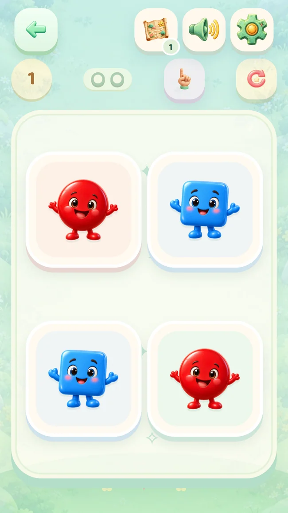

Pantalla real del juego
Mira, empareja, prueba.
Parejas divertidas con formas conocidas.
Pequeñas aventuras de 2 a 5 años
Sigan a un gatito entre formas, colores y pequeñas historias. Que toque, pruebe y cree, mientras comparten sus descubrimientos.
Actualmente en prueba cerrada. El acceso a Google Play depende de la autorización de tu cuenta de prueba.




Una nueva curiosidad en cada parada
Actividades cortas comparten un mismo viaje. Parejas, trazos, memoria, números y juego creativo se alternan mientras los retos crecen poco a poco.
Pantalla real del juego
Parejas divertidas con formas conocidas.
Pantalla real del juego
Que elija cómo colorear cada dibujo.
Una escena de la versión completa
Crea una escena con pegatinas ganadas.
Pantalla real del juego
Manos pequeñas completan la imagen.

Juntos, a su ritmo
Una comprobación de adulto protege el área para familias. Organiza el tiempo, consulta lo que ha probado y encuentra ideas para compartir.
Tiempo diario de juego, recordatorios de descanso y hora de dormir.
Actividades completadas y tiempo de juego. No es una evaluación del desarrollo ni de sus capacidades.
Guarda o comparte creaciones y prepara hojas A4 para colorear e imprimir.
Imágenes conocidas, palabras nuevas
Elijan una imagen, escuchen su nombre y busquen el mismo objeto en casa. Los cinco idiomas están disponibles en ambas versiones.
Las voces en turco e inglés están incluidas y funcionan sin conexión. Español, portugués de Brasil e indonesio usan la voz del dispositivo; su disponibilidad y uso sin conexión dependen del paquete instalado.
Se pueden repetir. Los dibujos y las medallas ganados se conservan. La colección completa se abre con una compra opcional de un solo pago desde el área para familias.
En el juego, abre el área para familias y luego Versión completa. Google Play muestra el precio actual y pide confirmar el pago. Esta web no cobra pagos. No hay suscripción.
Da acceso a la colección completa, pero las paradas se siguen abriendo al completarlas en orden. Comprar no salta el progreso.
El contenido de la aplicación Android funciona sin conexión. Las compras y su restauración necesitan internet. Las voces sin conexión de los otros tres idiomas dependen del paquete del dispositivo.
Restaura la compra desde el área para familias con la misma cuenta de Google Play. El progreso y las creaciones se guardan en el dispositivo; restaurar la compra no los traslada automáticamente.
No. Son premios del juego. El resumen muestra actividades completadas y tiempo de juego; no puntúa el desarrollo ni las capacidades.
Sigan a un gatito entre formas, colores y pequeñas historias. Que toque, pruebe y cree, mientras comparten sus descubrimientos.
Actualmente en prueba cerrada. El acceso a Google Play depende de la autorización de tu cuenta de prueba.